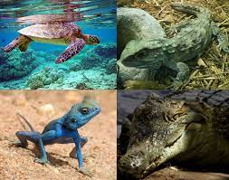
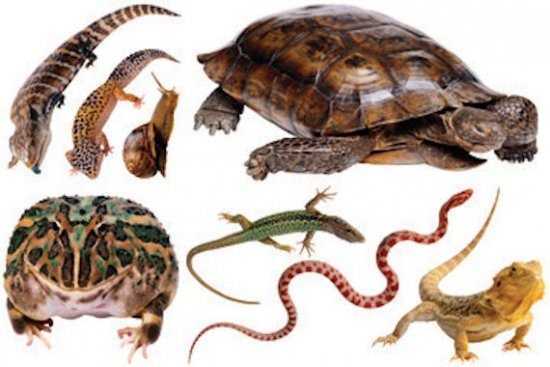

 La mayoría de los reptiles se han adaptado a la vida terrestre, pero finalmente se ha descubierto que algunos viven en el agua. Una piel resistente y escamosa es una de sus adaptaciones. Otras de las adaptaciones que han contribuido al éxito de los reptiles en tierra firme son que incluyen pulmones bien desarrollados, un sistema circulatorio de doble circuito, un sistema excretor que conserva el agua, fuertes extremidades, fertilización interna y huevos terrestres con cascarón. Además los reptiles pueden controlar su temperatura corporal cambiando de lugar.
 La capacidad para controlar su temperatura corporal es una enorme ventaja para los animales activos. Los animales de los que hemos hablado hasta ahora son ectotérmicos. Los ectotérmicos utilizan la conducta para controlar la temperatura del cuerpo. Para calentarse, se tienden bajo el sol todo el día. Para enfriarse, se mueven hacia la sombra, nadan, o se refugian en madrigueras subterráneas.
Los reptiles herbívoros, en cambio, tienen los mismos problemas de masticación de los mamíferos herbívoros, pero, a falta de los dientes complejos que poseen estos últimos, los reptiles tragan rocas y piedras (llamados gastrolitos) para facilitar la digestión: las rocas se lavan en el estómago, ayudando a moler la materia vegetal. Las tortugas marinas, cocodrilos e iguanas marinas también utilizan los gastrolitos como lastre, lo cual les sirve de ayuda para la inmersión.
Los pulmones de los reptiles son esponjosos y tienen mayor superficie para intercambio de gases que los anfibios. Esto es debido a que la mayoría de los reptiles no puede intercambiar gases a través de la piel, como hacen la mayoría de los anfibios de piel húmeda. Muchos reptiles tienen músculos que rodean las costillas y expanden la cavidad torácica para inhalar, o colapsan la cavidad para exhalar. Varias especies de cocodrilos también poseen repliegues cutáneos que separan la boca de los conductos nasales; así respiran por las fosas nasales mientras tienen la boca abierta. Para intercambiar gases con el medio ambiente, los reptiles poseen dos pulmones funcionales o bien, en el caso de ciertas especies de serpientes, solo uno.